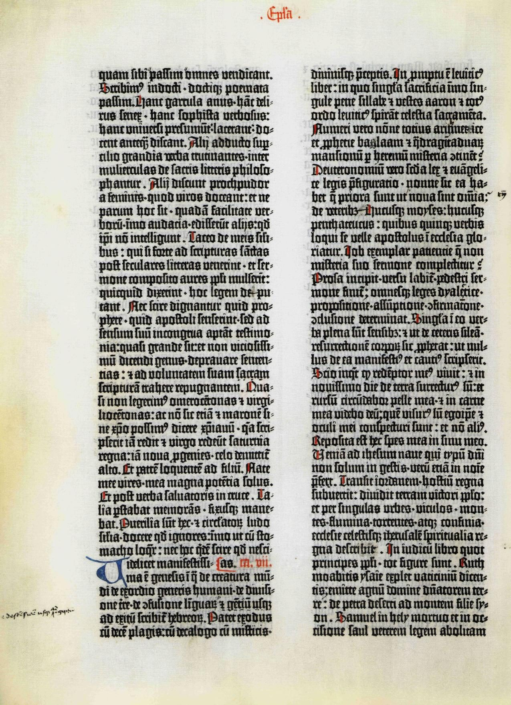
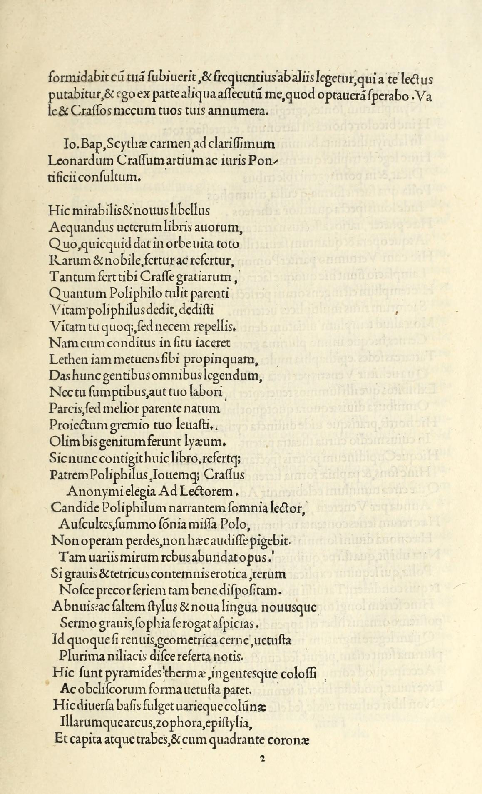
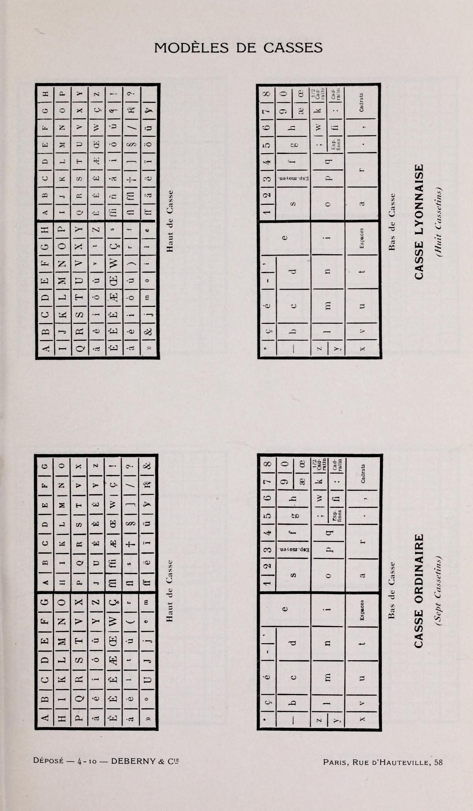
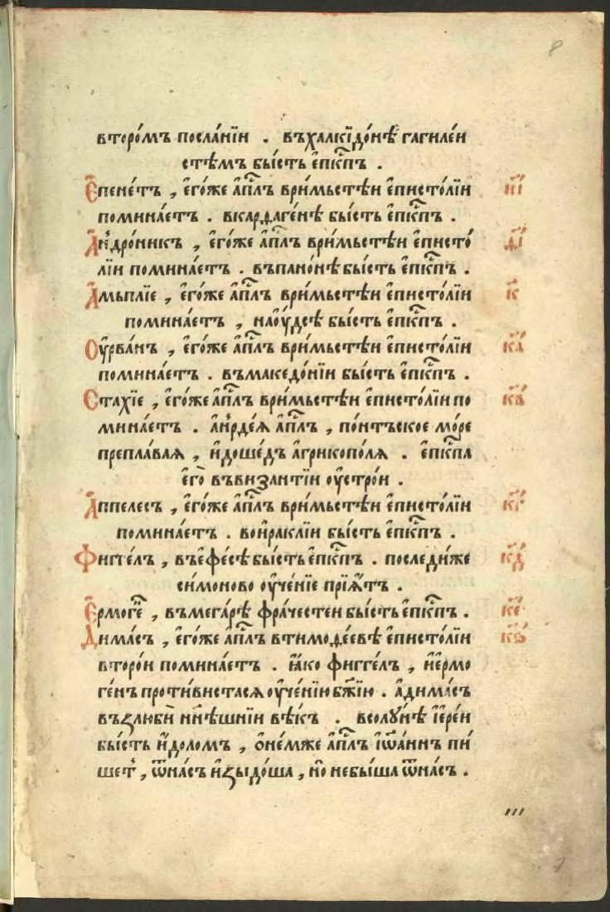
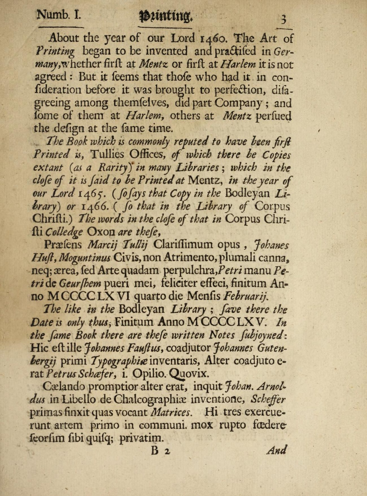
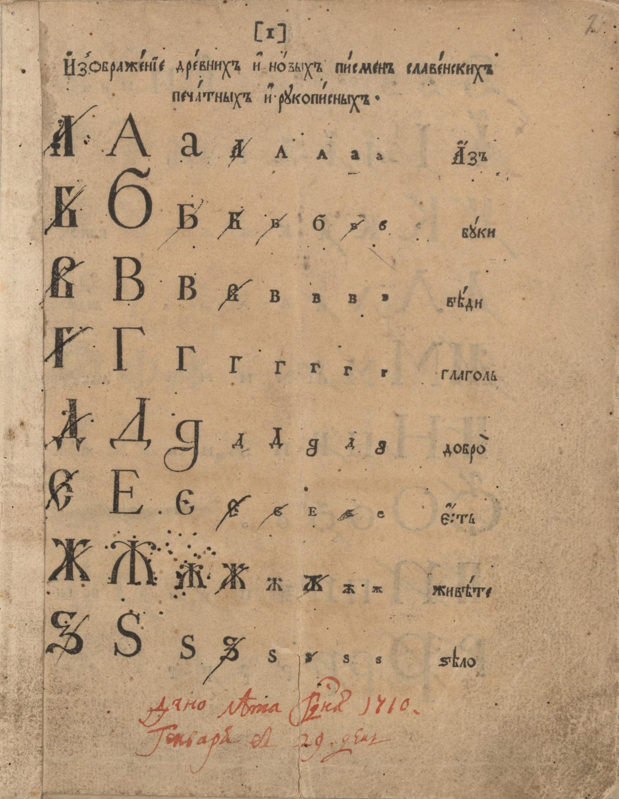
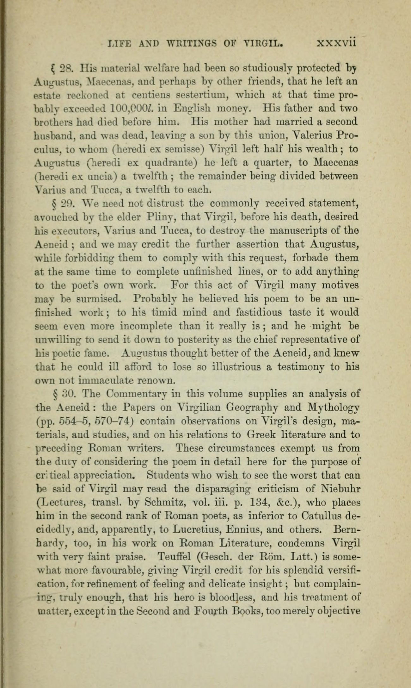
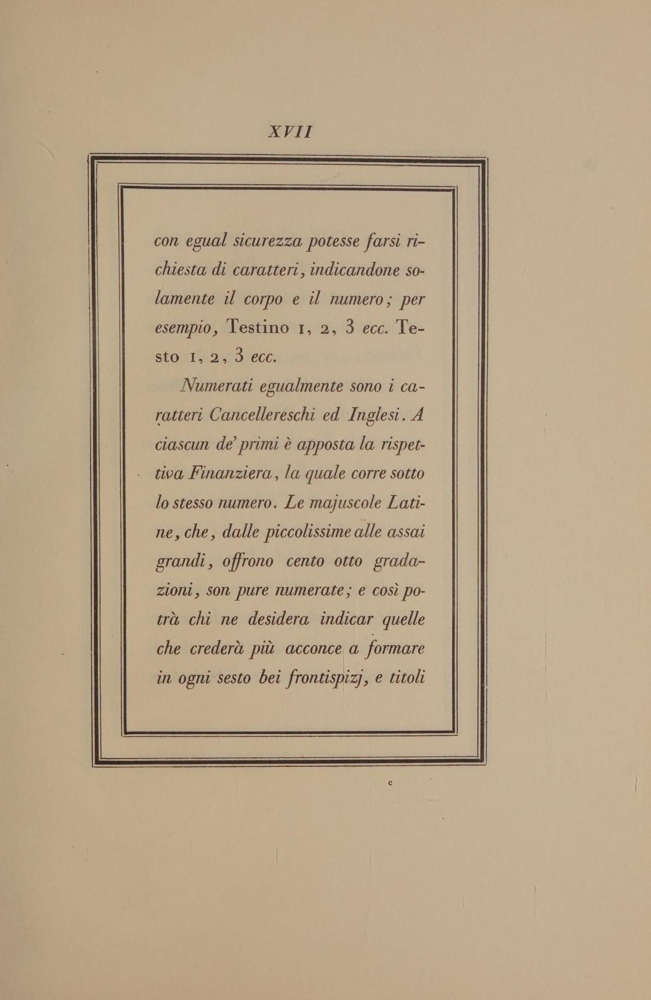
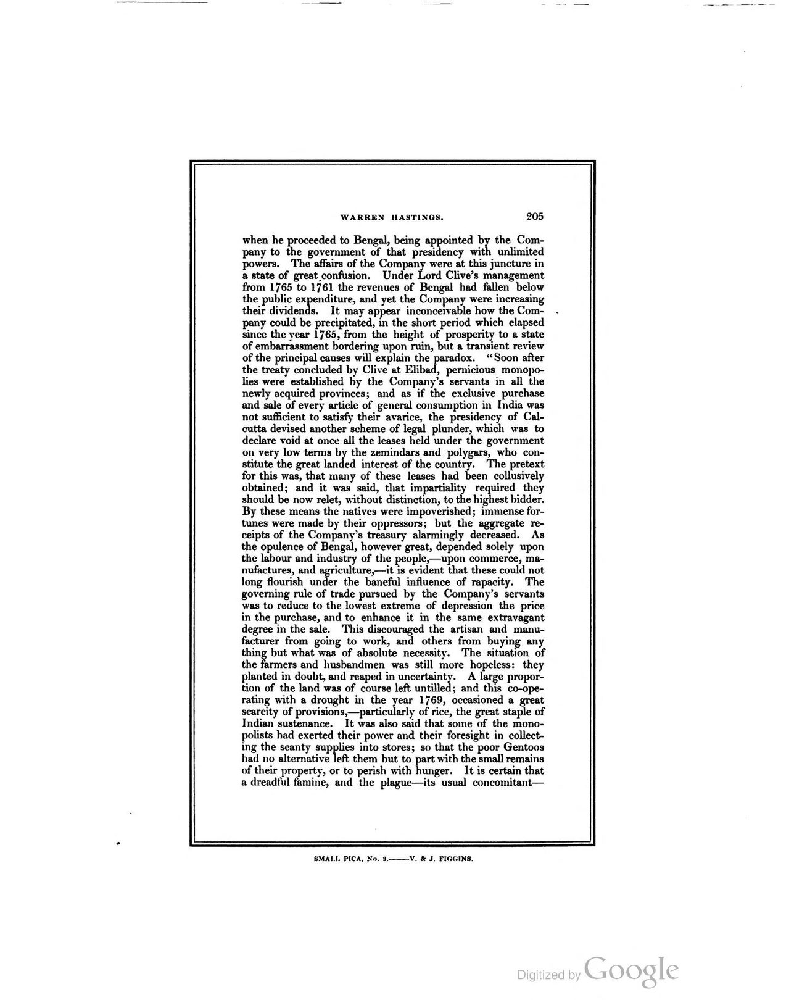
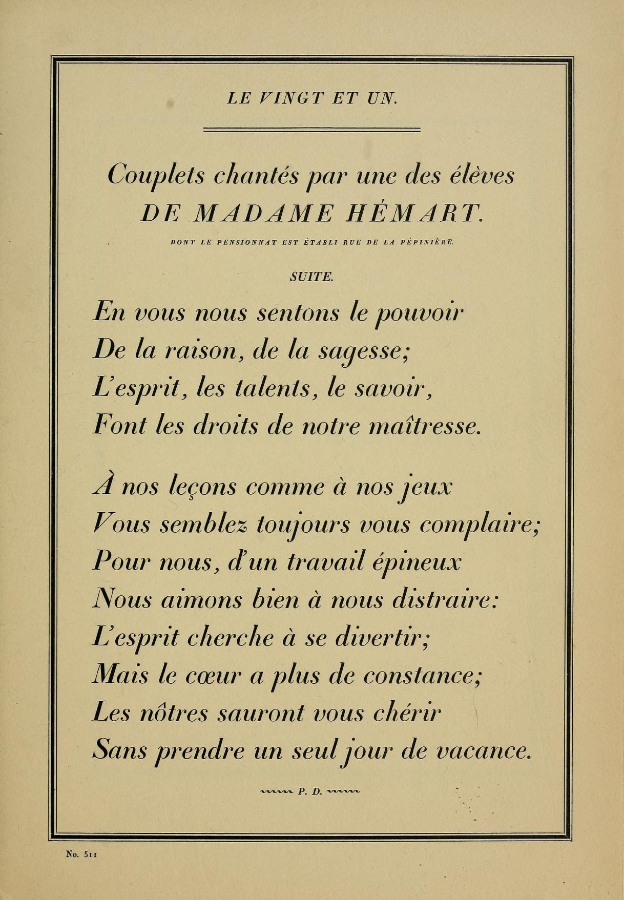

Полный курс для тех, кто хочет запомнить, а не «прочитать и забыть»: строение знака и строительные линейки, кегль и интерлиньяж, абзац, пять веков истории антиквы и гротесков, экранные шрифты. В каждом разделе — свой тренажёр: двигайте ползунки и смотрите, как меняется текст прямо на этой странице.
У каждой буквы есть «скелет» и «мясо»: линии, на которых она стоит, штрихи, из которых она собрана, и просветы, которыми она дышит. Эта анатомия — общий язык типографов: знаешь названия частей — понимаешь любой разбор любой гарнитуры.
Начнём с линеек. Каждая гарнитура «живёт» внутри системы горизонтальных линий, как рельсы, на которых стоят знаки. Самая важная — базовая линия: по ней выравниваются все строчные и прописные, и именно она — та самая «линия шрифта», про которую говорят «буква пляшет под базовой линией». От базовой линии вверх откладывается рост строчных (высота буквы x, без выносных элементов) и рост прописных. Верхние и нижние выносные элементы вылезают за эти зоны: у «б», «в», «ё» — верхушки, у «р», «у», «ф», «д» — хвосты. Рамка, в которую помещается вообще всё, — кегельная площадка: она же эм-квадрат, базовая единица измерения в шрифте.
Посмотрите на два самых «говорящих» знака: прописная R показывает стойку, очко, засечки и каплевидный элемент, двуочковая g — связку, петлю и нижний выносной. Такие плакаты висели в каждой наборной:
Мастера эпохи Возрождения считали букву задачей геометрии. Альбрехт Дюрер в «Руководстве к измерению» (1525) и Жоффруа Тори в книге «Champ fleury» (1529) строили литеры из круга и квадрата: высота прописной — девять модулей, ширина — шесть, засечки и штрихи выводились циркулем. Эти чертежи — древние «строительные линейки» шрифта: пропорции знака задавались не глазомером, а модулем, как в архитектуре.
Сегодня та же идея живёт в цифровых метриках. Каждый шрифтовой файл описан в единицах на кегельную — units per em (UPM): обычно 1000 или 2048 единиц на эм-квадрат. Внутри этой сетки заданы рост строчных, рост прописных, глубина выносных, толщины штрихов и апроши. Геометрические гротески XX века — Футура, Авангард — снова построены «по Тори»: из окружностей и идеальных квадратов, только циркуль заменила векторная программа.
И последнее, что нужно запомнить про строение: очко решает. При одном и том же кегле гарнитура с крупным очком (как Verdana или Helvetica) выглядит заметно больше, чем гарнитура с маленьким очком (как старые антиквы). Поэтому «12 пунктов» — это не абсолютная величина, а лишь размер кегельной площадки: сколько влезет буквы — зависит от строения конкретного шрифта.
Попробуйте: включите «Ж» и метрики — у кириллических знаков шире апроши; выберите «у» — хвост уходит под нижнюю линию выносных.
Кегль — это размер шрифта, но не «высота буквы», как кажется, а высота кегельной площадки. Понятие «12 пунктов» почти четыреста лет держит всю полиграфию на себе — и до сих пор не даёт себе перевести.
Измеряют кегль в пунктах (сокращение «пт», англ. pt). В континентальной Европе действует система Дидо: пункт равен 0,376 мм — от фамилии Фирмена Дидо, чей дядя Франсуа-Амбруаз усовершенствовал пунктуацию Пьера-Симона Фурнье. Англо-американский пункт чуть больше — 0,3528 мм (в нём пика из 12 пунктов равна 4,22 мм), поэтому разница с системой Дидо доходит до семи процентов: «двенадцать» в Лондоне и «двенадцать» в Париже — разные кегли. Русская типографика унаследовала именно пункты Дидо; 12 пунктов Дидо зовутся цицеро — аналог англо-американской пики.
Кегли имеют человеческие имена — они придуманы наборщиками для скорости и живы до сих пор:
| Пункты | Имя кегля | Где применялся |
|---|---|---|
| 3–4 | бриллиант, диамант | справочные индексы, сноски словарей |
| 5 | перл | карманные словари, ценники |
| 6 | нонпарель | географические карты, таблицы |
| 7–8 | миньон, петит | карманные книги, сноски, газетная мелочь |
| 9–10 | боргес, корпус | классическая книжная строка (корпус — «золотая» норма романа) |
| 12 | цицеро | газеты, журнальный текст, учебники |
| 14 | миттель | детские и начальные книги |
| 16–20 | терция, текст | заголовки, титульные листы |
| >20 | афишные кегли | плакаты, афиши, вывески |
Производные названия: кегль ещё называют кегель, размер на экране задают в пикселях (px) и rem; 1 rem равен базовому кеглю страницы (обычно 16 px, что при 96 dpi — ровно 12 пунктов).
Попробуйте: поставьте 10 пт — это «корпус», классика книжного набора; найдите ближайшее к 12 значение — подсказка скажет имя кегля (цицеро, миттель, терция…).
Интерлиньяж — расстояние между базовыми линиями соседних строк. Английское leading родилось прямым делом: в набор между строками вкладывали тонкие полоски свинца — renglas, шпон, — и «набрать в 12/16» означало буквально «положить полоску в 4 пункта под кегль 12».
Интерлиньяж записывают как 12/16 — «набор кеглем двенадцать на шестнадцать», или множителем: 1,33. Книжная классика живёт в диапазоне 1,2–1,5; в вебе комфортнее 1,5–1,7, потому что строка на экране длиннее и глазу нужен «воздух» на возврат к началу новой строки.
Наборная касса хранила тысячи литер, и между строками наборщик вставлял полоски шпона. Традиция задавать межстрочье «кегль на кегль с полоской» дожила до цифровой эпохи: когда вы ставите 1,5 в редакторе, вы буквально просите браузер положить между строками по полке́льной полоске свинца.
Попробуйте: 0,9 — строки «слипаются», тяжело читать; 1,4 — книжная норма; 2,2 — стихи на открытке. Включите подсветку — увидите полоски просвета.
Три «между» — три разные величины, которые путают даже практики. Апрош — встроенный в знак боковой отступ, кернинг — поправка конкретной паре, трекинг — общая разрядка целому набору.
Апроши (sidebearings, боковые поля знака) — часть самой литеры: расстояние от края кегельной площадки до штриха слева и справа. Из апрошей + пробела складывается межбуквенное расстояние набора. У «И» и «Ш» апроши тесные, у «Т» и «Г» — просторные по бокам, потому что нависающие штрихи зрительно «нависают».
Кернинг (kerning, кёрнинг) — ручная или встроенная поправка расстояния конкретной паре знаков: «АУ», «ГА», «Та», «Уд». Без кернинга «А» и «У» стоят как чужие: диагонали создают иллюзию лишнего пробела. Пары описаны в самом файле шрифта; в руках наборщика — только «включить» их.
Трекинг (letter-spacing, разрядка, межбуквенное расстояние) — добавка ко всем знакам сразу: положительная разрядка «расступается», отрицательная — уплотняется. Главное правило: капслок разряжают — прописные знаки плотнее строчных и без +10…+20 единиц на тысячную эм выглядят теснее строчного набора. Мелкий кегль тоже любит лёгкую разрядку, крупный — лёгкое уплотнение.
Попробуйте: добавьте +100 к капслоку — он «задышит»; затем выключите кернинг и посмотрите на «ГА» и «AV»: диагонали разъезжаются.
Абзац — смены мысли, отмеченные для глаза. Всё, как абзац оформлен — отступ, выключка, мера, переносы — определяет, читается ли страница «как по маслу» или задыхается в реках пробелов и висячих строках.
Новую мысль помечают одним из двух способов — отступом (красная строка, абзацный отступ, indent) или межабзацным интервалом. Классическая норма — выбирать что-то одно: в книге абзацный отступ около одной кегельной (эм), в вебе чаще интервал в 0,75–1 эм. Удваивать (и отступ, и интервал) — дурной тон: абзацы начинают «плавать» отдельными островами.
Выключка (выравнивание, alignment) бывает четырёх родов: влево (по левому краю, «флаг слева»), вправо (флаг справа), по центру и по формату (полная выключка, justify). Набор «по формату» без переносов рождает «жидкие» строки с гигантскими пробелами и «реки» — вертикальные коридоры из пробелов, протянувшиеся через несколько строк. Правило: выключка по формату требует переносов или «умной» вёрстки. Отдельная тонкость — висячая пунктуация: кавычки, тире и точки выносятся за край набора, чтобы визуальный край был ровным (её называют оптическим выравниванием).
Мера (measure) — длина строки. Роберт Брингхёрст в «Стиле в типографике» даёт классику: 45–75 знаков на строку, около 66 — идеал. Мера длиннее — глаз теряет начало следующей строки, короче — «зубчатый» правый флаг утомляет ритм. Висячие строки (вдовы и сироты, widows and orphans) — короткая строка абзаца, оторвавшаяся от него: вверху полосы («вдова») или внизу («сирота»). Верстальщик их устраняет — в CSS за это отвечают свойства orphans и widows.
Типографика начинается там, где заканчивается набор «как попало». Абзац — её дыхание: слишком частые абзацы дробят мысль, слишком редкие превращают страницу в камень. Наборщик прошлого века знал это телом: касса, верстатка, галель — и красная строка как знак уважения к читателю.
Мера держит ритм: сорок пять знаков — глаз живо возвращается, семьдесят пять — уже медлит. Выключка по формату без переносов рождает реки, и читатель спотыкается на ровном месте. Поэтому старые наборщики говорили: «Хочешь выключить по формату — сначала выучи переносы».
≈ знаков в строке: — · вердикт меры: —
Каждая дата этой ленты — не «факт из википедии», а точка, в которой изменилось само понятие «книга». Даты запоминайте парами: Гутенберг — Жансон, Альд — Гарамон, Баскервиль — Бодони, Кэзлон IV — Футура.
Подвижные металлические литеры, наборная касса, винтовой пресс. Около 1455 года выходит 42-строчная Библия — около 180 экземпляров, набранных готической текстурой. Книга перестаёт быть единственным рукописным артефактом.

Француз в Венеции отливает римский шрифт по образцу каролингского минускула — рождается венецианская антиква: наклонная ось, диагональный контраст, малые засечки.
Издатель-гуманист с резчиком Франческо Грифо вводят курсив (1501) и карманный формат октаво. Его шедевр до этого — «Гипнеротомахия Полифила» (1499), одна из красивейших инкунабул.

Пуансонист Клод Гарамон доводит старый стиль до канона: вертикальнее ось, спокойнее пропорции. Его гаральда правит Европой двести лет.

Первая точно датированная русская печатная книга: полууставные литеры, изящные заставки. В 1574 году Фёдоров печатает «Апостол» уже во Львове.

«Mechanick Exercises» — первая энциклопедия наборного и печатного дела: как лить литеры, собирать кассу, работать прессом. С этого момента типографика — документированная наука.

Реформа алфавита: светская «гражданская азбука» отделяет светскую книгу от церковной. Кириллица становится «европейской» — с антиквенными пропорциями.

Пьер-Симон Фурнье предлагает первую систему типографских пунктов (1737), Фирмен Дидо доводит её до стандарта: 1 пункт ≈ 0,376 мм. Измеримость делает шрифт инженерией.
Вельветовая бумага, горячий пресс, шрифт с вертикальной осью и высоким контрастом. Вергилий Баскервиля — вершина «перехода» от старого стиля к классицизму.

Волосяные штрихи, плоские засечки, вертикальная ось — классицистическая антиква, доведённая до предела. «Manuale tipografico» (1818, издан вдовой) — её завещание.

Уильям Кэзлон IV показывает в образцовой книжке шрифт без засечек («Two Lines English Egyptian», 1816); в 1830-е касса Винсента Фиггинса закрепляет термин sans-serif. Публика сначала морщится — потом не может остановиться.

Типографии-гиганты выпускают толстые каталоги кеглей и начертаний; линотип и монотип переводят набор на конвейер. Шрифт становится промышленным товаром.

Герберт Байер рисует универсальный алфавит только из строчных, Пауль Реннер выпускает геометрическую Футуру (1927), Ян Чихольд издаёт манифест «Новая типографика» (1928). Асимметрия, фиксация на левом краю, гротеск как язык времени.
Стэнли Морисон делает для «The Times» газетную антикву: узкую, экономную, читаемую на плохой бумаге. Самая «нечаянно классическая» гарнитура века.
Макс Мидингер с Эдуардом Хоффманом создают Neue Haas Grotesk (с 1960 — Helvetica), Адриан Фрутигер — Univers из 21 начертания с единой нумерацией. Швейцарский стиль становится всемирным языком навигации и брендов.
1984: Apple Macintosh и язык PostScript делают набор настольным. 1996: Мэттью Картер рисует пару для экрана — Verdana и Georgia. Веб-типографика получает собственные законы.
Спецификация OpenType 1.8 (Microsoft, Google, Apple, Adobe) вводит variable fonts: один файл с осями веса, ширины и оптического размера. История делает новый виток — к «живой» литере.
Исторические иллюстрации — сканы книг из общественного достояния, источник (Internet Archive) указан под каждым изображением.
Антиква (serif, «шрифты с засечками»; от итал. antico — «древний, римский») — вся линия шрифтов, начатая Жансоном в 1470 году от римской капитальной надписи. Её письмо читается пять веков подряд — и каждый подкласс антиквы — это своя эпоха с собственным «почерком».
Три признака, по которым антиква узнаётся мгновенно. Первый — засечки: поперечные «подножия» на концах штрихов, ведущие глаз по строке. Второй — контраст: разница между толстыми основными и тонкими соединительными штрихами. Третий — ось овалов: у старых антикв овал «о» наклонён (диагональная ось — наследие широкого пера), у классицистических стоит прямо (вертикальная ось — наследие гравировального резца). Добавьте к этому относительно малое очко и вы получите портрет целого класса.
| Подкласс | Алиасы | Лицо эпохи | Имена |
|---|---|---|---|
| Венецианская | гуманистическая, humanist | наклонная ось, диагональный контраст, косая перекладина «e», грубоватые засечки | Жансон, Griffo |
| Гаральда | старый стиль, old style, Garalde | вертикальнее ось, ровнее ритм, гармония «ручной работы» | Гарамон, Bembo, Sabon |
| Переходная | transitional, неоклассицизм XVIII в. | вертикальная ось, контраст выше, засечки тоньше и горизонтальнее | Баскервиль, Caslon, Times New Roman |
| Классицистическая | дидона, didone, новый стиль | волосяные штрихи, плоские засечки, вертикальная ось, максимальный контраст | Бодони, Дидо, Walbaum |
| Брусковая | славаб, slab serif, египетская, механическая | засечки-бруски без плавников, низкий контраст, «индустриальная» прямолинейность | Clarendon, Rockwell, Beton |
Попробуйте: щёлкайте эпохи слева направо и следите за буквой «a» и перекладиной «e»: ось выравнивается, контраст растёт, засечки превращаются из «лапок» в плоские линии.
Гротеск (sans-serif, рубленый шрифт, «без засечек»; итал. grottesco — «гротовый, причудливый») — класс шрифтов, который публика сначала высмеивала, а потом сделала им голос XX века: вывески, метро, плакаты Баухауса, экран телефона.
Без засечек, с почти равными штрихами и, как правило, крупным очком гротеск выглядит плотнее и «моложе» антиквы того же кегля. В советской классификации такие шрифты честно звались рублеными; англоязычная традиция делит их на четыре поколения, и каждое узнаётся по мелочам:
| Поколение | Как узнать | Имена |
|---|---|---|
| Старые гротески | grotesque · закрытая апертура, «зажатые» формы, двуэтажные a и g, слегка «рубцеватый» ритм | Akzidenz-Grotesk (1898), Franklin Gothic |
| Новые гротески | neo-grotesque · ровный ритм, нейтральные закрытые формы, «невидимость» | Helvetica, Univers (1957), Roboto |
| Геометрические | geometric · круги вместо овалов, одноэтажная «a», видны циркуль и линейка | Футура (1927), Avant Garde, Century Gothic |
| Гуманистические | humanist · живой жест пера, открытая апертура, наклонные «е» и «s» | Gill Sans (1928), Frutiger, Myriad, Segoe UI |
Попробуйте: сравните «Га» у геометрического и старого: круг против «зажатого» овала; у экранного — самое крупное очко и просторные апроши.
Спор «что лучше» некорректен: это два разных инструмента. Антиква — про время и длинное чтение, гротеск — про пространство и мгновенное узнавание. Грамотный дизайнер не выбирает сторону — он выбирает роль.
| Признак | Антиква | Гротеск |
|---|---|---|
| Засечки | есть: лапки, бруски, линии | нет («рубленые») |
| Контраст штрихов | есть — от мягкого до волосяного | минимальный |
| Ось овалов | диагональная → вертикальная (по эпохам) | как правило, вертикальная |
| Очко | относительно малое | крупное — «кажется больше кегля» |
| Апертура | чаще закрытая (кроме гуманистических) | от открытой до закрытой |
| Характер | книжный, исторический, тёплый | нейтральный, городской, «настоящий момент» |
| Где сила | книги, статьи, лонриды, «дорогие» бренды | интерфейсы, навигация, заголовки, вывески |
| На экране | с 1996 есть свои: Georgia, Charter | доминирует: Segoe UI, Roboto, SF Pro |
Правило шрифтовой пары: берите антикву для основного текста и гротеск для заголовков, подписей и навигации — или наоборот, но контраст классов должен быть явным. Две гарнитуры одного класса рядом спорят, как два тенора; антиква с гротеском поют дуэтом.
Попробуйте: включите крупный знак — у Georgia видны засечки и контраст, у Verdana — ровный штрих и огромное очко. Verdana при меньшем кегле выглядит крупнее — это и есть «очко решает».
Экран — не бумага: знак живёт на сетке светящихся ячеек. Отсюда собственные законы: хинтинг, сглаживание, retina, пиксельные шрифты, тёмная тема и переменные оси. Всё, что придумано для экрана за сорок лет, проверяется на двух тренажёрах ниже.
В 1980-е знак рисовался прямо по сетке: пиксельный (растровый, bitmap) шрифт — каждая точка каждой буквы задана вручную. Сьюзен Каре рисовала такие шрифты для первого Macintosh. Затем векторные контуры победили, но появилась новая проблема: как уместить плавную кривую на грубую сетку? Ответ — хинтинг (наводка, hinting): инструкции внутри шрифта, которые подсказывают рендереру, какие штрихи выровнять по пикселям, чтобы тонкие линии не исчезали. Спорили и о сглаживании: антиалиасинг замыливает края в серый, а субпиксельный рендеринг (Microsoft ClearType, конец 1990-х) использует RGB-полоски ячеек — до эры Retina текст был и «цветным», и резким одновременно.
Попробуйте: уменьшите сетку до 6–8 — буква теряет форму, как на экране 1980-х; включите сглаживание — контуры «замылятся», но станут похожи на себя. Это и есть компромисс, который решал хинтинг.
Попробуйте: проведите ползунок от 100 до 900. Если ваша система поддерживает переменные шрифты (Segoe UI Variable, SF Pro), переход плавный; иначе — ступени между начертаниями.
Двенадцать правил, которые стоит унести с собой, и десять вопросов с разбором. Пройдите квиз сразу после чтения — так термины закрепятся надолго.
Дальше — глубже: сравните гарнитуры этой страницы в инспекторе браузера, разберите кассу любимой книги и вернитесь к тренажёрам: кегль, интерлиньяж, трекинг и мера станут рефлексами.